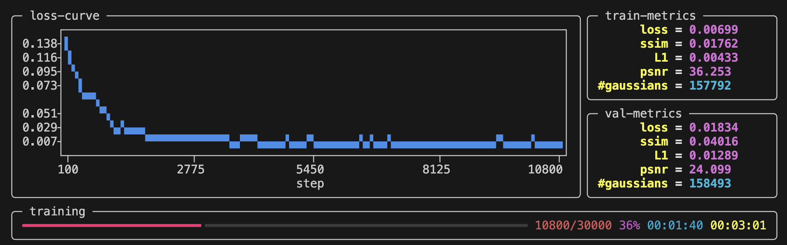

Quickstart
We are going to start from a simple example with the scene data/nerf_synthetic/lego , where a 3D Gaussian Splatting model will be trained, tested, exported and visualized. You can find code from RadianceFieldStudio/examples/quickstart .
1. Create Work Space
As RadianceFieldStudio have been installed as a package, we start from an empty project. Just make a new directory named Quickstart anywhere as our work space.
2. Data Preparation
Copy the download URL from NeRF example data. The URL should start with https://drive.usercontent.google.com/download? .
mkdir data
wget "https://drive.usercontent.google.com/download?..." -O data/example.zip
unzip data/example.zip -d data
rm data/example.zip
You will get two scene now: data/nerf_llff_data/fern and data/nerf_synthetic/lego .
3. Train a 3DGS
Create a train script named train.py : (1)
- You can also find the code at RadianceFieldStudio/examples/quickstart/01_train_3dgs.py .
Then, run the script in your terminal and you can watch progress from the terminal
python train.py \
--dataset.path data/nerf_synthetic/lego \
--experiment.name testing

4. Check Training Results
After training for ~5min, the task will be done and you can use Ctrl+C to exit.
The related training results will be dumped at outputs/testing/${timestamp} :
-
Checkpoints: Model weights are saved at
outputs/testing/${timestamp}/ckpts. -
Validation: novel views as well as their ground truth are rendered at
outputs/testing/${timestamp}/dump/val. -
Log: training details will be logged at
outputs/testing/${timestamp}/log.txt. -
Arguments: training arguments will be automatically generated at
outputs/testing/${timestamp}/task.py. (1)-
It enables you to rerun an experiment with the completely same arguments, simply by:
-
5. Write Your First Script
In section 3, we have cloned an existing train script without understanding how the script works. We are now going to write our own script from scratch.
5.1 Hello World
Create another script named test.py and start with Hello World :
5.2 Start From Task
The above script succeed in executing the main function run . Similarly, Radiance Field Studio abstracts any executable script into a Task class, which always has a run method as the entry point of the script. Users need to import the Task class as a base class and override its run method through inheritance:
5.3 CLI Support
One of the advantages of doing this is that Radiance Field Studio provides convenient command-line support based on tyro. Users need to use the dataclass decorator to add fields to this class, after which these fields will be automatically recognized:
$ python test.py -h
usage: test.py [-h] [OPTIONS]
╭─ options ─────────────────────────────────────────────────────────────────────────╮
│ -h, --help show this help message and exit │
│ --seed {None}|INT (default: None) │
│ --cuda {None}|INT (default: None) │
│ --num-a INT ellipsis means "required" (required) │
│ --num-b INT default value is 6 (default: 6) │
│ --num-c INT ellipsis means "required" (required) │
│ --info STR default value is 'Hello World!' (default: 'Hello World!') │
╰───────────────────────────────────────────────────────────────────────────────────╯
$ python test.py --num-a 1 --num-c 3
Hello World!
self.num_a + self.num_b + self.num_c = 10
$ python test.py --num-a 1 --num-c 3 --num-b 9 --info "Good Morning\!"
Good Morning!
self.num_a + self.num_b + self.num_c = 13
5.4 Edit Argument
Before we pass tester object to cli_from_task API, it is possible for us to dynamically modify the arguments:
$ python test.py -h
usage: test.py [-h] [OPTIONS]
╭─ options ──────────────────────────────────────────────────────────╮
│ -h, --help show this help message and exit │
│ --seed {None}|INT (default: None) │
│ --cuda {None}|INT (default: None) │
│ --num-a INT ellipsis means "required" (required) │
│ --num-b INT default value is 6 (default: 6) │
│ --num-c INT ellipsis means "required" (default: 9) │
│ --info STR default value is 'Hello World!' (required) │
╰────────────────────────────────────────────────────────────────────╯
5.5 Task Components
Radiance Field Studio provides a series of components for Task to use. For example, a useful component ExperimentLoader is used to deserialize Task object from outputs/testing/${timestamp}/task.py . We can use it to build a simple tester.
In summary, the behavior of a task component is just similiar to that of any other field. The Tester have some components or fields, which can either store values or implements some functions.
| train.py | |
|---|---|
Such a coding philosophy is called "composition". Instead of excessive inheritance, Radiance Field Studio prefers composition and interfaces, believing it brings more clean, easy-to-use and flexible APIs.
6. Test Your Model
Rewrite test.py for pretrained model testing: (1)
- You can also find the code at RadianceFieldStudio/examples/quickstart/02_test_3dgs.py .
Run the script and the results are:
7. Visualize 3DGS
Create another script named visualize.py for visualization: (1)
- You can also find the code at RadianceFieldStudio/examples/quickstart/03_visualize_3dgs.py .
Then, you can visualize 3DGS in the interactive web viewer.